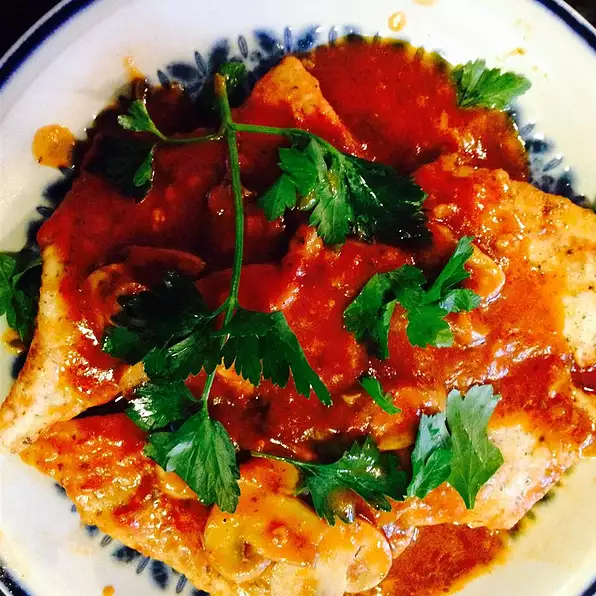

Mediterranean-Chicken

Description
This Mediterranean chicken recipe features chicken breasts simmered in
a sauce of tomatoes, olives, white wine, garlic,
and herbs.
Ingredients
- 2 tablespoons white wine
- 2 teaspoons olive oil
- 6 skinless, boneless chicken breast halves
- 3 cloves garlic, minced
- ½ cup diced onion
- 3 cups tomatoes, chopped
- ½ cup white wine
- 2 teaspoons chopped fresh thyme
- 1 tablespoon chopped fresh basil
- ½ cup kalamata olives
- ¼ cup chopped fresh parsley
- salt and pepper to taste
Steps
- Heat white wine and oil in a large skillet
over medium heat. Add chicken and cook until golden,
about 4 to 6 minutes on each side. Remove chicken from
skillet and set aside.
- Add garlic to pan drippings; sauté for 30 seconds.
Add onion; cook and stir until onions are tender, about
3 minutes. Add tomatoes and bring to a boil. Reduce heat
to low and add 1/2 cup white wine; simmer for 10 minutes.
Add thyme and basil and simmer for 5 more minutes.
- Return chicken to skillet, cover, and cook over low
heat until the chicken is cooked through and no longer
pink inside. Add olives and parsley; cook for 1 minute.
Season with salt and pepper and serve.